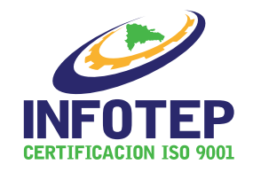

Propuesta académica de formación técnico-profesional


PROGRAMA DE FORMACIÓN TÉCNICO PROFESIONAL
Madurez Tecnológica y Transformación Digital
Propuesta de módulo formativo por competencias
Santo Domingo, República Dominicana · Octubre de 2026
Programa PFMTTD · 80 horas · Módulo I: 36 h · Módulo II: 44 h
Simulación pedagógica del inicio, desarrollo y cierre de una formación; no representa la ejecución de las 80 horas.
Diseño académico de práctica; no constituye un programa institucional aprobado.
Bienvenidos a nuestra experiencia · Inicio de curso
Comencemos juntos
Un espacio para conocernos, construir confianza y aprender desde nuestra experiencia.